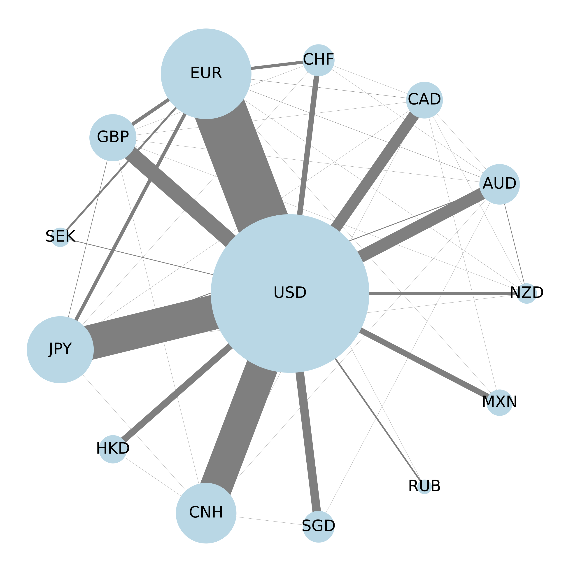

Dollar Dominance: A Source of Dollar Volatility?
with Lukas Frei and Simon Stalder
SNB Working Paper 2026-05
The US dollar (USD) is involved in 88% of global foreign exchange transactions, partly due to its role as a vehicle currency. Using high-frequency data from primary interdealer platforms, we show that cross-trades via the USD can generate price fluctuations in USD exchange rates and amplify aggregate USD volatility. These results highlight a fundamental trade-off: while dollar dominance enhances market liquidity, it also increases the currency's exposure to shocks originating in other currency pairs.
